sector55 supernovae (16 total)
Each figure has three panels. The top panel shows the transient light curve, the middle panel shows the local background (estimated in an annulus), and the bottom panel shows a "background-model corrected" light curve. Details about the background model are in the README.
The vertical red line marks the time of discovery reported to TNS. Other useful metadata from TNS is in the figure title.
Note that the top and bottom panel are in magnitudes, while the middle panel is in differential flux units. The magnitudes are calibrated to the flux in the reference image used for image subtraction. Thus, flux from the host galaxy is included in these magnitudes.
3-sigma upper limits are plotted as triangles with no errorbars. A typical limiting magnitude is 19.6 in 30 minutes or 18.4 in 200 seconds (for low backgrounds).
The links allow you to download the light curve data as a text file.
More details in the README.
2022rfh
 2022rsb
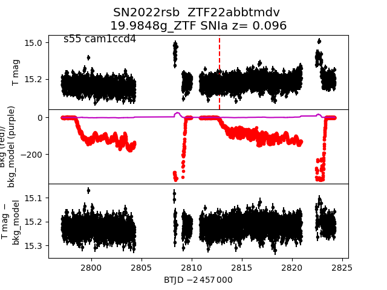
2022son
2022rsb
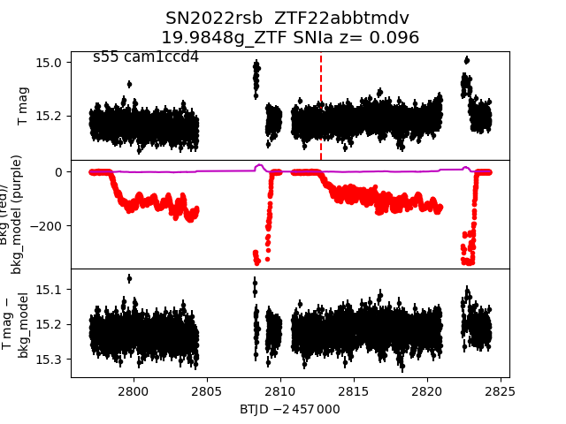
2022son
 2022sje
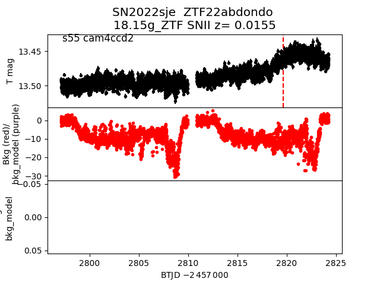
2022rzz
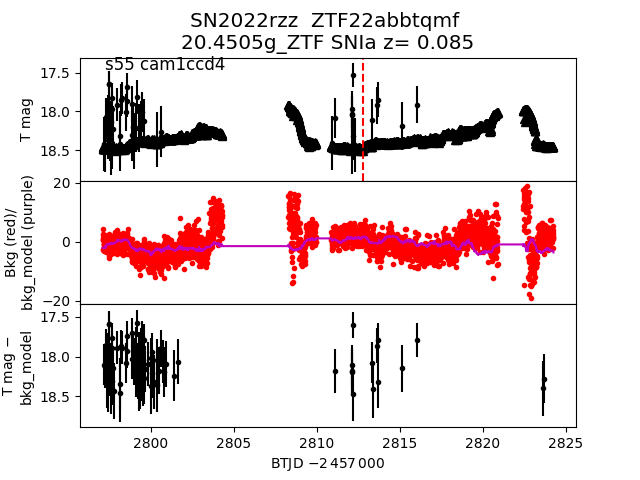
2022roy
2022sje
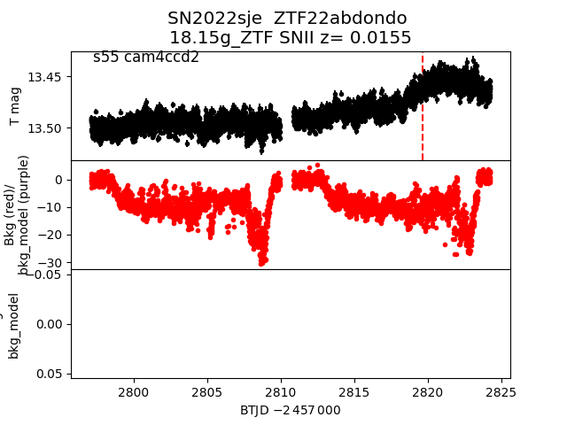
2022rzz
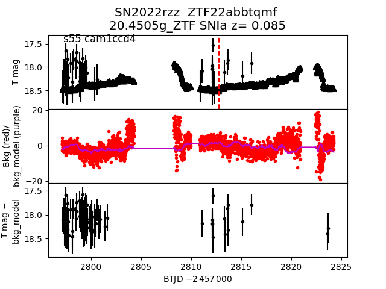
2022roy
 2022sjf
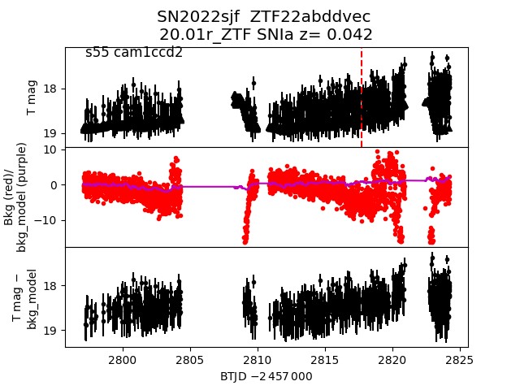
2022sio
2022sjf
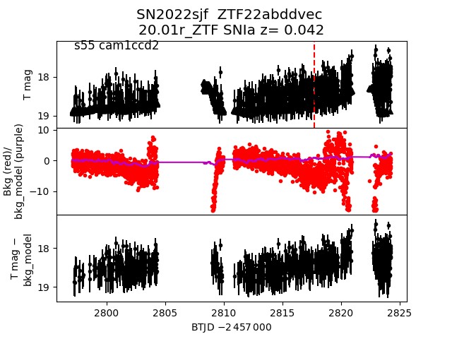
2022sio
 2022rky
2022rky
 2022rnw
2022rnw
 2022qye
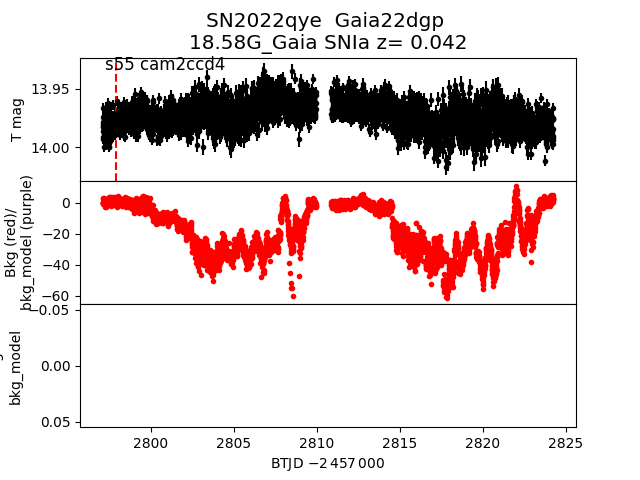
2022tis
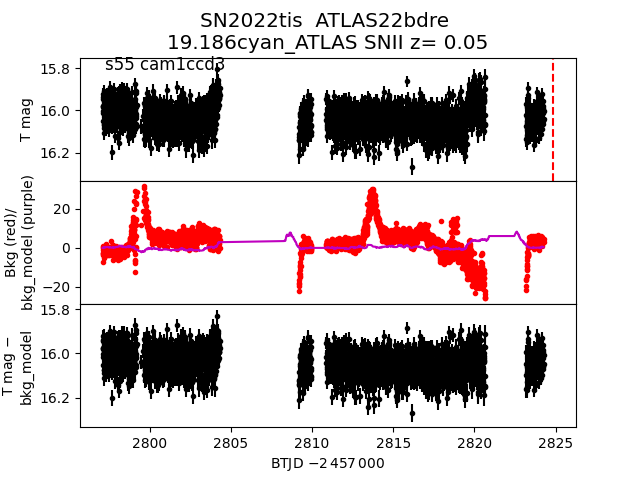
2022rfj
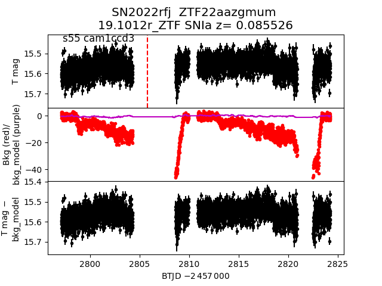
2022rti
2022qye
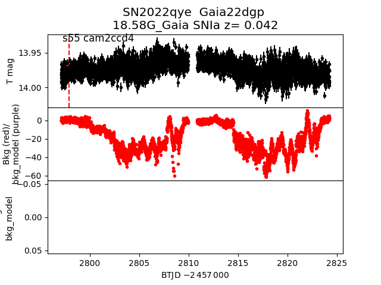
2022tis
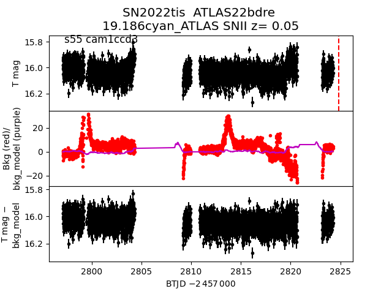
2022rfj
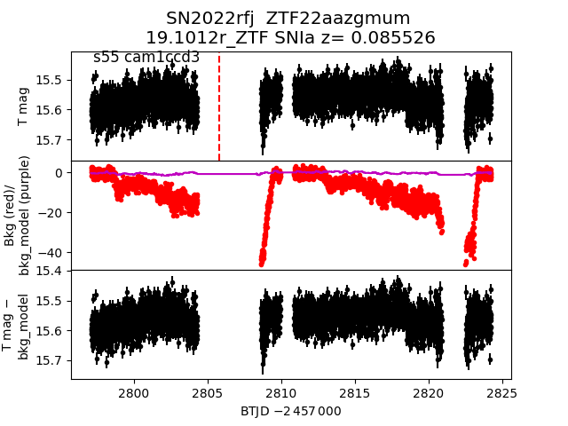
2022rti
 2022rvb
2022rvb
 2022rll
2022rll